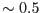

OM images are affected by a fixed modulo-8 pattern originating from the on-board centroiding of photon events to one eighth of the physical CCD pixel (see [1] or [3])
The task ommodmap implements modulo-8 pattern correction by redistributing the photon counts over the -pixel areas of the image. Currently there are three available correction methods, and the user can switch between them in order to achieve optimal results. The first (default) method generates the mod-8 map by searching for the regular pattern in the image, derived from `source' free regions, and then the photon events are evenly resampled within each cell of the found modulo-8 map. This method, which is employed in the OM Imaging chain, maintains the total number of events within each cell, thus the photometry is not affected. However, images with sparse backgrounds (short exposures, or far UV images) may contain insufficient counts to generate a modulo-8 map of adquate accuracy.
The second method exploits the well populated, cummulative OM flat field image (which can be taken from the corresponding CCF). The pattern can be well characterised from this image and the correction applied to the ODF data - it assumes the pattern is stable from observation to observation. In this case the modulo-8 pattern map is created using the OM flat field, and then the photon events are redistributed in accordance with this map. With this, the total number of the photon events is conserved, as in the first method.
The third method uses multiplication of the input image by the flat field (the latter is assumed to be normalised to unity).
The user can choose the modulo-8 correction method by specifying the parameter mod8correction (see Section 5).
It should be emphasised that while these approaches produce acceptable results for fainter and intermediate brightness spectra, none of the modulo-8 corrections methods work well in the vicinity of bright features, in part due to the presence of coincidence loss effects.
In addition, the above methods
assume that the background/flat-field completely represents the modulo-8
pattern but this is not strictly correct and so small errors at the  1 sub-pixel level may be introduced. An alternative, more formally correct
approach will be investigated in the near future.
1 sub-pixel level may be introduced. An alternative, more formally correct
approach will be investigated in the near future.
As an example, Fig.2 illustrates a spectrum badly affected by coincidence losses and modulo-8 noise, along with a couple of spectra belonging to fainter sources which are not affected by the coincidence loss. The altered spectrum can readily be spotted by the presence of black square regions around the spectrum, with almost vanishing counts (down to a few counts per pixel or zero), in contrast with high levels of counts of the spectrum itself (up to a few thousand). This effectively results in modulation of the extracted spectra with the period corresponding to the modulo-8 pattern. The effect becomes noticeable when the count rate exceeds  count/sec/pixel. Reaching this level depends on the brightness and spectral type of the source and cannot be rigorously quantified. Approximately it corresponds to the source's magnitudes .